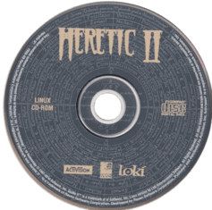

OpenAL (for "Open Audio Library") is a cross-platform audio API complementary to OpenGL. It was specifically designed to render multichannel output of 3D arrangements of sound sources around the listener. The API was originally developed by Loki Entertainment Software, an American video game developer, in late 1999. The first specification was released in early 2000. They created the API as part of their business of porting Windows games to Linux. For example, Heavy Gear II and Heretic II for Linux were some of the first games shipped using OpenAL.  The following games, among many others, are also known to be using OpenAL: S.T.A.L.K.E.R., BioShock, Mass Effect.
Creative Labs joined the OpenAL creation and authoring committee and released the first hardware-accelerated OpenAL drivers in 2001. The libraries supported SoudBlaster Live on MacOS and Windows.
Around 2009, the sample implementation became proprietary, but the older free version 1.1 is still available. Several open-source alternatives are also available. For example, OpenAL Soft is one of the widely used LGPL-licensed alternatives.
The PureBasic OpenAL SDK was created to show how to use the ImpLib SDK to make custom import libraries in User-Lib format for PureBasic. It's not a DLL wrapper, but rather an import library for the OpenAL DLL, which can be used as a User-Lib in PureBasic. The SDK is compatible with the original OpenAL 1.0 and 1.1 and also the OpenAL Soft versions. The SDK includes the header files, API documentation and usage examples. The OpenAL DLL is not included, but it can be downloaded for free from the official OpenAL or OpenAL Soft websites. Since 2007, several applications and games were created using this SDK to implement 3D sound effects using the OpenAL API.
The PureBasic OpenAL SDK open source repository and official releases are available for free on Sourceforge and GitHub.
0 the following configuration option in src\openal32.def and src\openal64.def before compiling the OpenAL library:RENAME_AR_MEMBERS equ 1This is necessary for compatibility with the linker used in the previous PureBasic releases. Since PureBasic v6.11 the linker is lld-link, while earlier versions used polink.
There is no copyright notice because this SDK is in the public domain. It is available for free without any conditions or restrictions. However, the OpenAL DLL does have a license. Please, check the license if you need to redistribute the DLL.
The PureBasic OpenAL SDK was created by Vladimir Kameñar.